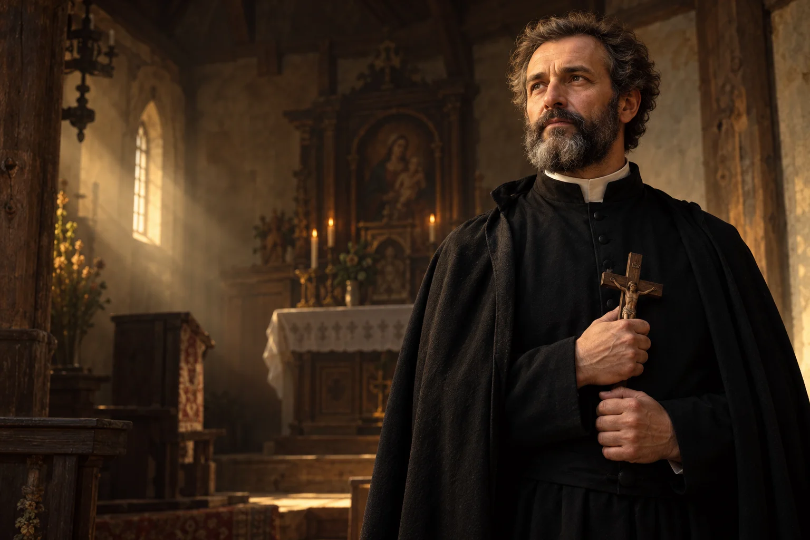

Uważna rozmowa
Podejmij rozmowę z kimś inaczej myślącym, unikając języka, który go upraszcza.

1591–1657
Obchód liturgiczny: 16 maja
Jezuita i męczennik, drugorzędny patron Polski.
Jezuita, kaznodzieja i misjonarz na terenach dawnej Rzeczypospolitej, czczony jako męczennik i patron Polski.
Poznaj historię jego życia →Wierność przekonaniom może iść razem z troską o pokój i godność każdego człowieka.
Refleksja redakcji W Modlitwie.Przychodzi na świat w rodzinie szlacheckiej.
Rozpoczyna nowicjat w Wilnie.
Przyjmuje święcenia.
Zostaje przełożonym domu zakonnego.
Ginie 16 maja w Janowie Poleskim.
Zostaje ustanowiony drugorzędnym patronem kraju.
 Współczesne wyobrażenie artystyczne.
Współczesne wyobrażenie artystyczne.Około 3 min czytania · 5 rozdziałów
Andrzej Bobola urodził się w 1591 roku w szlacheckiej rodzinie. Dokładne miejsce jego narodzin pozostaje niepewne. Uczył się w jezuickim kolegium w Braniewie. W 1611 roku wstąpił do Towarzystwa Jezusowego, rozpoczynając nowicjat w Wilnie. Formacja obejmowała naukę, modlitwę i przygotowanie do posługi w różnych miejscach.
Braniewo należało do ważnych ośrodków jezuickiej edukacji. Po zakończeniu nauki Andrzej wybrał drogę zakonną. Nowicjat był pierwszym etapem formacji i przygotowywał do życia we wspólnocie, której członkowie podejmowali różne zadania na prośbę przełożonych.
Jego życie zakonne było długą drogą między szkołami, parafiami i placówkami misyjnymi. Współczesne opracowania korzystają z dokumentów Towarzystwa Jezusowego oraz późniejszych świadectw kultu. Warto rozróżniać ich rodzaj i czas powstania.
Po pierwszych ślubach zakonnych Andrzej studiował filozofię i teologię w Wilnie. W 1622 roku przyjął święcenia kapłańskie. Pracował jako kaznodzieja, spowiednik i wychowawca, a zadania zakonne wymagały od niego częstych przeprowadzek. Przebywał między innymi w Nieświeżu i Wilnie, gdzie posługiwał przy kościele św. Kazimierza.
Studia nie oznaczały końca pracy nad sobą. Bobola łączył przygotowanie intelektualne z praktyką duszpasterską, a później prowadził działalność w kolejnych domach zakonnych. Źródła jezuickie wymieniają zarówno funkcje wychowawcze, jak i regularne głoszenie kazań oraz spowiedź.
W kolejnych latach działał w Bobrujsku, Płocku, Warszawie i Łomży. Pełnił funkcje przełożonego, kaznodziei oraz prefekta szkoły. W Pińsku i okolicach prowadził pracę misyjną, odwiedzając także mniejsze miejscowości. Region był religijnie i kulturowo zróżnicowany, a katolicy i prawosławni żyli tam w cieniu napięć epoki.
W Bobrujsku był przełożonym placówki, a w Płocku pracował przy kolegium. Zmiany miejsc nie były wyjątkowe w jezuickim sposobie posługi. W okolicach Pińska odwiedzał rozproszone wspólnoty, dla których dostęp do stałej opieki duszpasterskiej bywał trudny.
Bobola wrócił na ziemię pińską po pobycie w Wilnie. W 1657 roku, podczas wojennych walk na obszarze Rzeczypospolitej, został schwytany przez Kozaków i zabity w Janowie Poleskim. Kościół czci go jako męczennika. Jego śmierci nie da się oddzielić od przemocy i sporów, które dotknęły wówczas mieszkańców całego regionu.
Los kapłana rozegrał się podczas konfliktów, które przyniosły cierpienie wielu wspólnotom. Relacje o jego śmierci przekazują przede wszystkim pamięć religijną o męczeństwie. Współczesne opowiadanie tej historii powinno unikać przenoszenia dawnej przemocy na ocenę całych dzisiejszych wspólnot.
Po śmierci pamięć o jezuicie rozwijała się w kolejnych pokoleniach. Z czasem został beatyfikowany i kanonizowany. W 2002 roku Kongregacja Kultu Bożego zatwierdziła go jako drugorzędnego patrona Polski. Jego święto w Polsce przypada 16 maja. Sanktuarium w Warszawie jest jednym z miejsc, w których wierni poznają jego historię i modlą się przy relikwiach.
Patronat zatwierdzono na prośbę Kościoła w Polsce. Jezuici podkreślają związek jego posługi z pragnieniem jedności chrześcijan. Pamięć o Andrzeju może prowadzić do modlitwy o pokój oraz odpowiedzialnej rozmowy o skomplikowanej historii regionu.
W Polsce święto męczennika przypada 16 maja, w rocznicę jego śmierci w Janowie Poleskim.
Podejmij rozmowę z kimś inaczej myślącym, unikając języka, który go upraszcza.

Zajrzyj do historii regionu, w którym spotykały się różne wyznania i kultury.

Poświęć chwilę modlitwie o pokój między ludźmi i wspólnotami w konflikcie.
Ojcze nasz, któryś jest w niebie, święć się imię Twoje; przyjdź królestwo Twoje; bądź wola Twoja jako w niebie, tak i na ziemi. Chleba naszego powszedniego daj nam dzisiaj; i odpuść nam nasze winy, jako i my odpuszczamy naszym winowajcom; i nie wódź nas na pokuszenie, ale nas zbaw ode złego. Amen.
Tradycyjny tekst modlitwy; utrwalony polski wariant.Ojcze nasz →